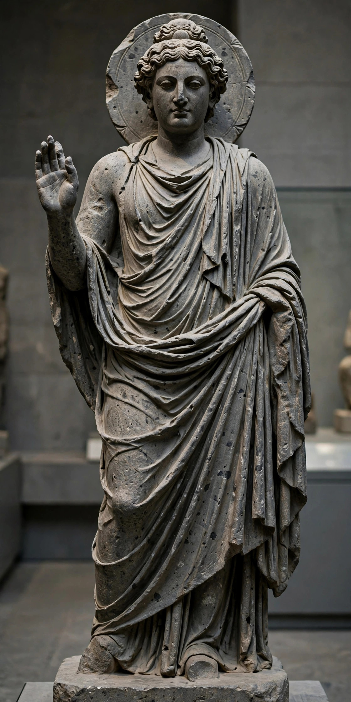

| Gandhara | |
|---|---|
| Region | Peshawar valley and Potohar plateau (modern Pakistan and eastern Afghanistan) |
| Capitals | Taxila; Pushkalavati; Purushapura (Peshawar) |
| Period | c. 6th century BC – c. 11th century AD |
| Major powers | Achaemenid Persia; Mauryas; Indo-Greeks; Kushans |
| Script | Kharoshthi; Greek; Brahmi |
Gandhara was an ancient region in the northwestern part of the Indian subcontinent, centred on the Peshawar valley and including Taxila, at the crossroads of trade routes linking India, Central Asia, and Iran. A satrapy of the Achaemenid Persian Empire, conquered by Alexander the Great, ruled in turn by Mauryas, Indo-Greek kings, Scythians, Parthians, and Kushans, Gandhara became a great centre of Buddhism and of the Greco-Buddhist art that bears its name.
Gandhara appears among the sixteen great realms (mahajanapadas) of early Buddhist texts, and its capital Taxila was famed as a seat of learning where princes and scholars — tradition includes Kautilya and the physician Jivaka — studied. Under the Mauryas it was governed from Taxila; Ashoka promoted Buddhism there. After about 185 BC, Indo-Greek kings such as Menander ruled the region, striking bilingual coins. Under the Kushan emperor Kanishka (2nd century AD), with his capital at nearby Purushapura, Gandhara enjoyed its golden age, sending Buddhist missions and art styles along the Silk Road. Devastated by the Hephthalite invasions of the 5th–6th centuries, the region's Buddhist civilisation declined, though the Hindu Shahi dynasty maintained a Gandharan kingdom into the 11th century.
Gandharan art, produced mainly in grey schist and stucco between the 1st and 7th centuries AD, fused Indian Buddhist subjects with Hellenistic and Roman forms. It produced some of the first anthropomorphic images of the Buddha — with Apollo-like features, wavy hair, and toga-like drapery — and narrative reliefs covering stupas such as those at Taxila's Dharmarajika and at Takht-i-Bahi. Collections from Gandhara are held by the Peshawar Museum, the Lahore Museum, the British Museum, and the Guimet Museum, among many others.